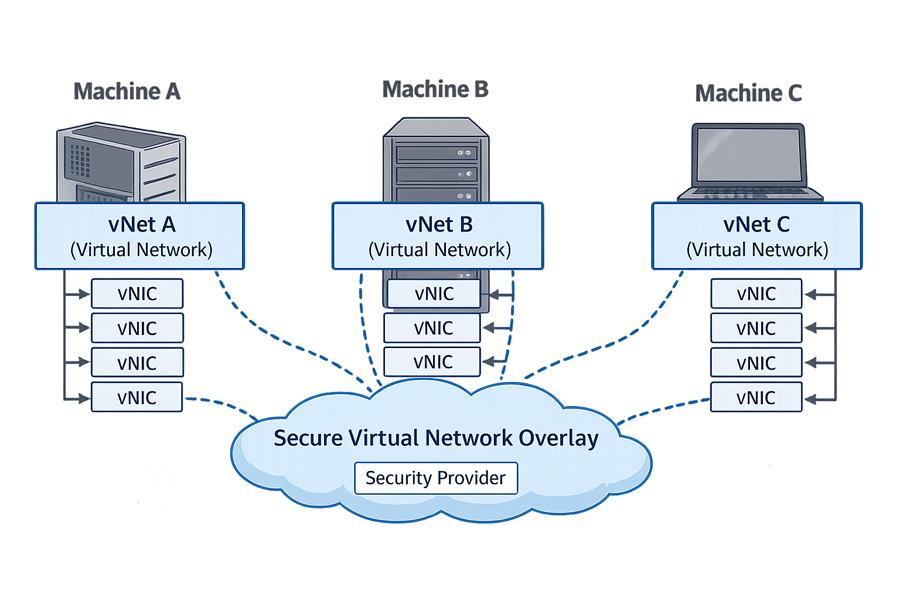

Сетевое взаимодействие
Выявление недостающей инфраструктуры
В современном мире каждый член домохозяйства носит с собой мобильный телефон. Он может буквально позвонить кому угодно в мире, и ему может позвонить кто угодно.
На первый взгляд этого кажется достаточно. В конце концов, связь уже существует.
Но присмотритесь внимательнее.
Использование этой инфраструктуры как есть сопряжено с серьёзными ограничениями:
- Каждый член домохозяйства должен знать номер телефона каждого другого члена.
- Нет встроенного понятия доступности.
- Если несколько членов домохозяйства могут ответить на вопрос, звонящий должен: позвонить одному → неудача → позвонить следующему → и так далее.
- Любой член домохозяйства может получать спам-звонки со всего мира.
- Когда присоединяется новый член домохозяйства, автоматического обнаружения нет.
- Звонки не защищены по умолчанию; при наличии нужных технологий их можно перехватить.
- Каждый член домохозяйства может использовать разное оборудование и разных поставщиков связи.
- Нет правил или политик, регулирующих, кто кому может звонить.
Да, эта инфраструктура работает — технически.
Но каждое хорошо организованное домохозяйство в итоге создаёт дополнительные, проприетарные решения для компенсации: списки контактов, групповые чаты, фильтрацию звонков, мессенджеры, правила доступа и оверлеи шифрования.
Почему OSI уровень 7 недостаточен для современных систем
OSI уровень 7 был разработан для эры монолитного программного обеспечения.
Он предполагает:
- Ограниченные приложения
- Стабильные конечные точки
- Явные API
- Известные пути запрос/ответ
- Интеграционные точки, спроектированные людьми
В том мире логика приложения была правильной границей абстракции.
Современные системы больше не являются приложениями. Это распределённые коллекции независимо развёрнутых, независимо управляемых процессов.
OSI уровень 7 отвечает на вопрос:
«Как одно приложение общается с другим?»
Современные системы требуют ответов на другой класс вопросов:
- Кому разрешено общаться с кем?
- Как устанавливается идентичность, когда экземпляры эфемерны?
- Как доступность определяется динамически?
- Как выражается намерение вместо жёстко закодированной маршрутизации?
- Как сбои изолируются, а не распространяются?
Эти вопросы архитектурные, а не протокольные.
Модель OSI заканчивается на уровне 7, потому что архитектура исторически была неявной и встроенной в приложения. Это допущение больше не выполняется в распределённых системах.
Уровень 7 обеспечивает синтаксис. Он не обеспечивает намерение.
Он определяет, как форматируются сообщения, но не почему коммуникация должна происходить, под чьим авторитетом или что случится, когда допущения окажутся неверными.
Этот пробел вынуждает современные системы компенсировать его, встраивая архитектуру в:
- библиотеки
- фреймворки
- конфигурационные файлы
- сайдкары
- повторные попытки
- конвенции
- племенное знание
Это корень неявной архитектуры.
Модель OSI не потерпела неудачу. Она завершилась, когда архитектура приложений всё ещё считалась неявной — допущение, которое больше не выполняется в эпоху распределённых систем.
Восполнение недостающей инфраструктуры
В аналогии с домохозяйством Layer 8 вводит специальный чехол для телефона.
Когда член домохозяйства входит в дом, он помещает свой телефон в этот чехол. Телефон остаётся тем же, но окружение вокруг него меняется.
Чехол добавляет следующие возможности:
- Вся коммуникация между членами домохозяйства изолирована от внешнего мира.
- Участники могут видеть доступность и статус других участников перед звонком.
- Вопросы можно задавать по теме, и один из квалифицированных членов домохозяйства ответит.
- Присоединение новых участников или уход существующих автоматически обнаруживается и обновляется.
- Все звонки между членами домохозяйства защищены по умолчанию.
- Офицеры безопасности определяют, кто с кем может общаться и какой информацией можно делиться.
С точки зрения домохозяйства коммуникация становится простой, безопасной и предсказуемой.
В мире сетевых технологий для достижения такого поведения сегодня требуется хрупкая комбинация:
- микросегментации
- VPN
- систем AAA
- обнаружения сервисов
- инфраструктуры обмена сообщениями
Поддержка этого в масштабе операционно дорога и архитектурно хрупка.
Layer 8 использует другой подход.
Вместо наслоения множества систем друг на друга он вводит единую конструкцию: Безопасный виртуальный сетевой оверлей.
Этот оверлей обеспечивает изоляцию, обнаружение, безопасность, применение политик и коммуникацию на основе намерений как один целостный слой — без утечки сложности в приложения.
Безопасный виртуальный сетевой оверлей
Тот же паттерн повторяется в распределённых системах.
Мы полагаемся на сырые сетевые примитивы — IP-адреса, порты, маршруты — и затем тратим огромные усилия на воссоздание всего того, что действительно нужно современным системам:
- обнаружение
- доступность
- логика маршрутизации
- безопасность
- применение политик
- абстракция
Это не случайность. Это структурный пробел.
Сетевая модель OSI заканчивается на уровне 7. Она описывает, как машины взаимодействуют, а не как процессы координируются в распределённом мире.
Современные системы работают по принципу «процесс-процесс». Не «хост-хост».
Layer 8 существует, чтобы заполнить этот недостающий слой.
Безопасный виртуальный сетевой оверлей обеспечивает то, чего базовые сети никогда не давали:
- коммуникацию на основе намерений
- встроенную безопасность
- маршрутизацию с учётом политик
- абстракцию от физической топологии
Участникам не нужно знать IP-адреса, порты, расположения или экземпляры. Они лишь выражают намерение — с кем они хотят связаться и зачем.
Оверлей разрешает всё остальное.
Layer 8 — это не расширение модели OSI. Это недостающий слой над ней.
Сетевой слой «процесс-процесс», спроектированный для современных распределённых систем.
Как обнаружение, маршрутизация и безопасность сливаются в один слой
В традиционных системах обнаружение, маршрутизация и безопасность реализуются как отдельные задачи:
- Системы обнаружения сервисов решают, где живёт сервис
- Логика маршрутизации решает, как до него добраться
- Системы безопасности решают, разрешена ли коммуникация
Поскольку эти системы разделены, они расходятся. Они отказывают независимо. И приложения вынуждены компенсировать.
Layer 8 объединяет эти задачи, делая идентичность и намерение основной абстракцией.
Когда vNIC (виртуальный сетевой интерфейс) подключается к Безопасному виртуальному сетевому оверлею, он не объявляет адрес. Он объявляет, кто он и что ему разрешено делать.
С этого момента:
- Обнаружение становится неявным: сервисы видны по идентичности и возможностям, а не по расположению
- Маршрутизация становится управляемой политиками: сообщения доставляются на основе намерения, а не топологии
- Безопасность становится неотъемлемой: коммуникация разрешается или отклоняется до маршрутизации
Нет фазы, когда сервис обнаружен, но не авторизован. Нет маршрута, который существует, но не должен использоваться. Нет пакета, который нужно инспектировать после того, как он уже прибыл.
Эти задачи сливаются, потому что разделяют одну и ту же точку принятия решений.
Оверлей разрешает обнаружение, авторизацию и доставку как единую операцию.
К моменту маршрутизации сообщение уже аутентифицировано, авторизовано и ограничено по области. К моменту видимости сервиса он уже разрешён.
Это не оптимизация. Это устранение.
Layer 8 удаляет целые классы сбоев, гарантируя, что обнаружение, маршрутизация и безопасность не могут расходиться.
Они больше не являются отдельными системами, которые должны согласовываться. Они — единый архитектурный авторитет.
Конкретный антипаттерн, который заменяется: Разрастание сервисной сетки
Распространённый ответ на ограничения OSI уровня 7 в распределённых системах — сервисная сетка.
Сервисные сетки пытаются восстановить недостающие архитектурные гарантии, вводя:
- сайдкар-прокси на каждый экземпляр сервиса
- внеполосное обнаружение сервисов
- распределённые правила маршрутизации
- дублированные движки безопасности и политик
Со временем это приводит к разрастанию сервисной сетки:
- каждый сервис запускает дополнительный инфраструктурный код
- логика маршрутизации разделена между приложением, прокси и плоскостью управления
- решения о безопасности принимаются после того, как трафик уже идёт
- сбои возникают из-за пробелов в координации между слоями
По сути, сетка воссоздаёт Layer 8, но неявно, косвенно и многократно.
Layer 8 заменяет разрастание сервисной сетки, делая эти задачи явными и единственными.
Вместо того чтобы:
- встраивать сетевую логику в сайдкары,
- дублировать движки политик по всему флоту, и
- координировать множество плоскостей управления,
Layer 8 предоставляет единый архитектурный авторитет, где:
- обнаружение основано на идентичности,
- маршрутизация управляется намерениями, и
- безопасность обеспечивается до начала коммуникации.
Результат — не более тонкая сетка. Это полное удаление сетки.
Одно маленькое изменение концепции — гигантский шаг к простоте
Каждая распределённая система начинается с одного и того же набора вопросов:
- Как мой сервис взаимодействует с внешним миром?
- Какой IP он использует?
- Какой порт?
- Как обеспечивается резервирование?
- Кто предоставляет эту информацию?
- Какой API?
- Какой протокол?
И многие другие.
Эти вопросы настолько привычны, что мы редко ставим их под сомнение.
Небольшой концептуальный сдвиг прост:
Зачем мне об этом заботиться?
В аппаратном обеспечении сетевая интерфейсная карта (NIC) подключает компьютер к сети. Вы не проектируете новую NIC для каждой собираемой машины. Вы покупаете её и подключаете.
Сегодня NIC встроена прямо в материнскую плату — это товарный компонент.
В программном обеспечении мы делаем наоборот.
Для каждого проекта, для каждой системы, для каждой команды мы заново создаём коммуникацию «процесс-процесс»: адресацию, маршрутизацию, обнаружение, повторные попытки, безопасность, политики и обработку сбоев.
Снова. И снова. И снова.
Говоря с сарказмом: каждый раз мы делаем это правильно.
Layer 8 прекращает это.
Вместо пересоздания коммуникации для каждого проекта Layer 8 инкапсулирует её в единый компонент: виртуальный сетевой интерфейс, или vNIC.
vNIC абстрагирует коммуникацию современного программного обеспечения за единым, согласованным интерфейсом. Приложения не работают с IP-адресами, портами, протоколами или топологией. Они просто общаются.
Хотя Layer 8 предоставляет собственную реализацию vNIC, усиленную ИИ, он полностью следует Правилу №1: кто-то другой может сделать это лучше.
По этой причине vNIC полностью интерфейсный и агностичный. Любой может реализовать его иначе, улучшить или полностью заменить — без изменения архитектуры системы.
Вот в чём сдвиг: коммуникация больше не изобретается заново. Она подключается.
Но как это работает?

Легенда диаграммы — Что устраняет каждый компонент
vNIC (виртуальный сетевой интерфейс)
Устраняет:
- Осведомлённость приложения об IP-адресах и портах
- Жёстко закодированные конечные точки сервисов
- Встроенную в приложение логику повторных попыток, маршрутизации и безопасности
vNet (виртуальная сеть)
Устраняет:
- Ручное обнаружение сервисов
- Осведомлённость об экземплярах и топологии
- Точечное соединение по принципу «каждый с каждым»
Безопасный виртуальный сетевой оверлей
Устраняет:
- Неявные допущения сетевого доверия
- Разрастание VPN, сайдкаров и микросегментации
- Поведение сети, зависящее от окружения
Провайдер безопасности
Устраняет:
- Логику авторизации внутри приложения
- Дрейф конфигурации безопасности между сервисами
- Неоднозначность идентичности между окружениями
Каждый компонент существует для устранения определённого класса сбоев, а не для добавления возможностей.
Каждое приложение предоставляет один безопасный локальный порт.
При создании экземпляра vNIC ему передаётся номер порта. Этот порт становится портом vNet приложения.
vNIC устанавливает безопасное соединение с локальным хостом на этом порту и привязывает его к Провайдеру безопасности. С точки зрения приложения оно общается только локально и безопасно.
С другой стороны находится виртуальная сеть, или vNet.
vNet — это программная реализация коммутатора и маршрутизатора в одном. Её задача — принимать сообщения от vNIC и направлять их к нужным целевым сервисам.
Когда несколько vNet используют:
- один и тот же Провайдер безопасности, и
- один и тот же порт vNet
они автоматически обнаруживают друг друга и подключаются.
Без конфигурации. Без ручного соединения. Без осведомлённости об экземплярах.
В отличие от традиционных сетей, здесь нет необходимости в TTL (Time To Live) для сообщений. Эта система следует Правилу одного хопа.
vNet различает локальные и внешние сообщения:
- Сообщения, полученные из локального источника, распределяются как по локальным, так и по внешним направлениям.
- Сообщения, полученные из внешнего источника, распределяются только по локальным направлениям.
- Это предотвращает зацикливание без необходимости счётчиков хопов или сложной логики маршрутизации.
Просто. Эффективно. Предсказуемо.
Приложение никогда не знает, куда идут сообщения. vNIC никогда не знает, кто их потребляет. vNet берёт на себя всё остальное.
Это сетевое взаимодействие «процесс-процесс» без случайной сложности традиционных сетей.
Мониторинг состояния
Критически важный компонент любой системы обмена сообщениями — видимость состояния.
Без неё системы отказывают незаметно, а операторы гадают.
Как минимум, система должна быть способна ответить на вопросы:
- Что происходит прямо сейчас?
- Какие сервисы доступны?
- Каков статус каждого сервиса?
- Сколько сообщений отправляется и принимается каждым сервисом?
- Сколько памяти потребляет каждый сервис?
- Сколько процессора используется?
- Есть ли признаки утечек памяти или исчерпания ресурсов?
В большинстве систем эта информация разбросана по логам, дашбордам и внешним инструментам. Мониторинг состояния становится запоздалой мыслью, прикрученной уже после запуска системы.
Layer 8 рассматривает мониторинг состояния как ключевую сетевую возможность.
Мониторинг состояния встроен непосредственно в коммуникационный слой и включает:
- непрерывное отслеживание состояния каждого сервиса
- пороговые аварийные сигналы (TCA) вместо пассивных метрик
- встроенные отчёты анализа памяти при превышении заданных порогов
Мониторинг состояния — это не отдельная система. Это часть работы сети.
Когда коммуникация, политики, безопасность и мониторинг состояния находятся на одном слое, сбои видны рано, локализуются быстро и устраняются до того, как начнут каскадироваться.
Именно так системы остаются наблюдаемыми, не становясь хрупкими.